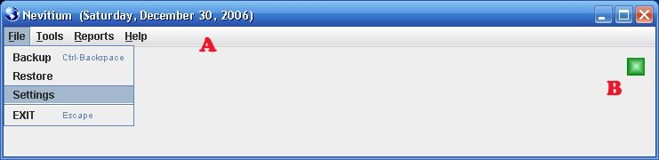
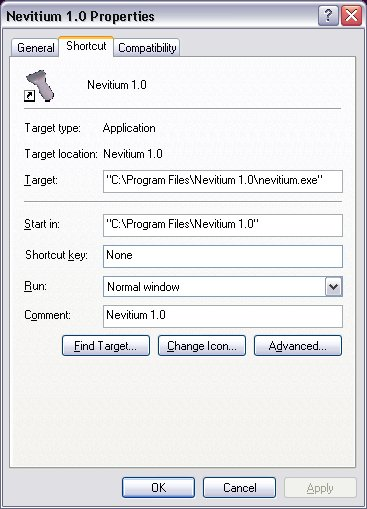
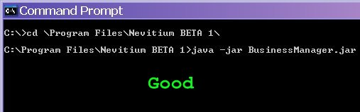
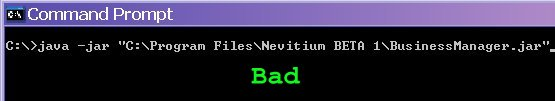
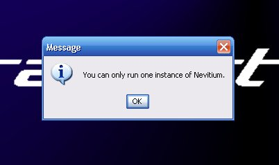

|
Trouble Shooting

Linking to and Starting Nevitium
You may have this error after creating a link to BusinessManager.jar. To fix this: The link to BusinessManager.jar (or
nevitium.exe) must have a 'working directory', or 'Start In:' pointing to
the folder that contains BusinessManager.jar; this is the Nevitium install
directory. (See Properties Pic) In Windows and other Desktops (KDE) you can get to this screen by Right-Clicking on the shortcut.

A 'Start In' or 'working directory' setting allows the Operating System
(Windows/Linux) to change to that directory before it runs your
application, in this case Nevitium. Nevitium requires that you set a
working directory to the same directory that contains
'BusinessManager.jar' or in the case of Windows, 'Nevitium.exe'.
Linux: Gnome has no way of setting a working directory so you will have to
create a script and link to that instead. Here are some examples of how to run Nevitium from the command line: 
 Run Once  If you see this it is because you tried to open multiple instances of Nevitium. If you get this error when you are not running Nevitium you need to restart your system before trying to run Nevitium again. If this doesn't resolve the problem contact technical support or try the suggestions below. This is caused by a file lock that is not released because Nevitium was not closed properly; typically from power outages. You may also try deleting this file: nevitium.run if restarting does not work. It is contained in the folder/directory where Nevitium is installed. Your operating system may have a utility to release stubborn file locks if this cannot be deleted.
|
|||